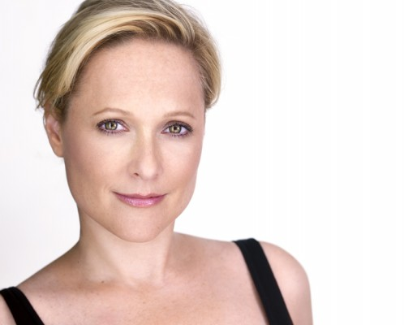

#1761 Choke - Der Simulant
Alternativ: Choke

 IMDB-Wertung: 6.5 / 10
IMDB-Wertung: 6.5 / 10  Metascore: 47
Metascore: 47 
Victor Mancini (Sam Rockwell) ist süchtig. Nach Sex. Und er hat keine Hemmungen. Keine Frau, sei sie nun 19 oder 90 Jahre alt, ist vor ihm sicher. Es ist also kaum verwunderlich, dass er nicht nur in seinem Job als kostümierter Kolonialist in einem historischen Themenpark Probleme bekommt. Victor landet in einer Therapiegruppe. Aber statt den anderen Betroffenen von seinen kranken Vorstellungen und Verhaltensweisen zu erzählen, vergnügt er sich lieber mit einer Nymphomanin. Victors Kumpel Denny (Brad William Henke, Der Zodiac-Killer), ebenfalls Mitglied der Anonymen Sexaholiker, versucht seinen Freund von der Wichtigkeit der Therapie zu überzeugen.
Jahr: 2008
Dauer: 92 Minuten
FSK: 16
Land: USA Studio: Fox Searchlight PicturesTonspuren: DTS - ,
Untertitel: Deutsch,
Auflösung: 720p (1280x688) Größe: 5601 MB
Genre: Drama, Komödie
Regisseur: Clark Gregg
Drehbuch: Clark Gregg, Chuck Palahniuk
Soundtrack: Nathan Larson
Darsteller:
-  Kate Blumberg als Edwin's Wife
- Jonah Bobo als Young Victor
 Heather Burns als Internet Date / Gwen
Heather Burns als Internet Date / Gwen David Fonteno als Edwin
David Fonteno als Edwin Matt Gerald als Detective Ryan
Matt Gerald als Detective Ryan Clark Gregg als Lord High Charlie
Clark Gregg als Lord High Charlie- Joel Grey als Phil
 Brad William Henke als Denny
Brad William Henke als Denny Paz de la Huerta als Nico
Paz de la Huerta als Nico Michelle Hurst als Shapely Nurse
Michelle Hurst als Shapely Nurse Anjelica Huston als Ida J. Mancini
Anjelica Huston als Ida J. Mancini Gillian Jacobs als Cherry Daiquiri / Beth
Gillian Jacobs als Cherry Daiquiri / Beth Jordan Lage als Mob Member #1
Jordan Lage als Mob Member #1 Kelly Macdonald als Paige Marshall
Kelly Macdonald als Paige Marshall Matt Malloy als Detective Foushee
Matt Malloy als Detective Foushee- Mary B. McCann als Detective Dorfman
- Alice Barrett als Lanky Woman on Airplane
- Marty Murphy als Second Trooper
- Bijou Phillips als Ursula
- Peggy Pope als Sister Angela
- Donald Rizzo als Guard Captain Norm
 Judith Roberts als Elegant Lady
Judith Roberts als Elegant Lady Sam Rockwell als Victor Mancini
Sam Rockwell als Victor Mancini Yolonda Ross als Cute Teacher
Yolonda Ross als Cute Teacher Suzanne Shepherd als Waitress
Suzanne Shepherd als Waitress David Shumbris als First Trooper
David Shumbris als First Trooper Sebastian Sozzi als Tito
Sebastian Sozzi als Tito- Kate Udall als Tall Nurse
- Melinda Wade als Mob Leader
 Isiah Whitlock Jr. als Detective Palmer
Isiah Whitlock Jr. als Detective Palmer- Richard Hughes als Blind CEO , uncredited
- Tiffany Rae Larkin als Tall Nurse , uncredited
- Chuck Palahniuk als Passenger , uncredited
- Kathryn Alexander als Mousy Girl / Agnes
- Teodorina Bello als Jamaican Lady
- Willi Burke als Deranged Socialite
- Viola Harris als Eva Muller
- Jen Jones als Old Lady with Note
- Neil Pepe als Zoo Security Guard
- Denise Raimi als Pretty Foster Mom
- Mike S. Ryan als Lonnie
- Solo Scott als Mob Member #2
- Fast Ali als Girl in closet , uncredited
- Joseph Basile als Blacksmith , uncredited
- Allison Karman als Filthy Wench , uncredited
- Paul Thornton als Restaurant Patron , uncredited
- Erin Anne Williams als Colonial Villager , uncredited
Datei: X:\2008(A-F)\Choke - Der Simulant (2008, FSK16, 1280x688).mkv seit 17.08.2015
Festplatte: HD 2007(A-Z)-2008(A-F)
 Es gibt insgesamt 66 Filme in der Gruppe '2008(A-F)'
Es gibt insgesamt 66 Filme in der Gruppe '2008(A-F)'